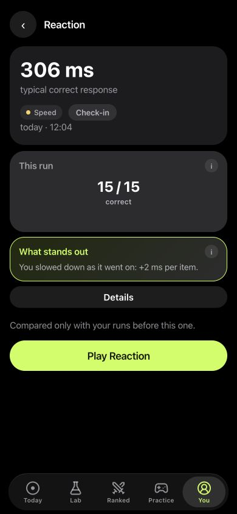

Inside LabRats
Read the time and the answers together.
This saved demo run shows 306 ms as the typical correct response and 15 / 15 correct. The app also flags that responses slowed across the run.
The time describes response speed; the count describes successful responses. Keeping both visible gives the run more context than a single best tap.
How to track reaction time in LabRats
- Open Practice and choose Reaction for a visual signal or Sound reaction for a tone.
- Read the instructions and complete the run.
- Open You and select a saved run to review its result.
- Use the supplement journal for what you took, and a note for unusual conditions.
Keep visual and sound results separate. The same setup makes later runs easier to compare.
What does a reaction time test measure?
In a simple visual task, you wait for a light and tap when it appears. The result combines several parts of that moment: noticing the light, responding, moving your finger and the device registering the touch. A sound reaction task uses a tone instead. Those are different tasks, so compare like with like.
Milliseconds give the result a concrete unit. A smaller time means a quicker response on that task. It does not tell you why the response was quicker, or how you would perform in a different setting.
Read the whole run
Your quickest tap is interesting, but it leaves out the rest. LabRats records a typical response time, slow responses and early taps. Look at those together: a quicker typical time with more false starts can mean you changed how you played.
Faster timing + more early taps
Check the errors before calling it a better run. These are example interpretations, not player results.
For tasks that require choosing or withholding a response, also read the attention test guide. Those demands differ from responding to one light.
Make your own runs easier to compare
- Use the same phone and the same reaction task.
- Keep your grip and the time of day reasonably consistent.
- Play a few familiarisation runs before choosing a reference period.
- Save ordinary days, including slower ones.
- Record unusual distractions or changes in sleep in your Journal.
A phone measures the full interaction with its screen or audio system. Switching devices or audio setups adds another difference. Treat a new setup as a new context rather than a personal record to beat.
Track a pattern rather than chase a number
Open Reaction in Practice, complete the run and revisit its saved results in your personal trends. Repeat on later days using a similar setup. A series lets you ask whether the change persists instead of selecting the best attempt from one evening.
There is no single “good reaction time” that this page can assign to everyone. Task rules, anticipation, hardware and conditions all matter. LabRats describes your game performance; it does not certify driving ability, work fitness or a medical condition.
If timing is part of a routine question, choose it in a planned personal experiment. You can keep your nootropic log alongside that record without treating an association as a cause.